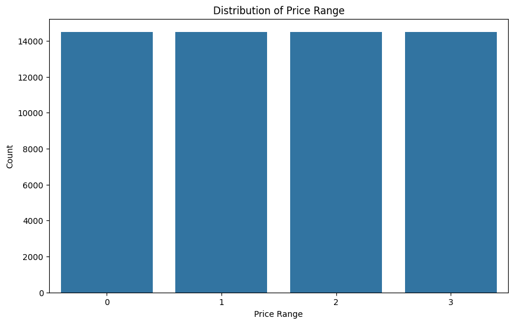
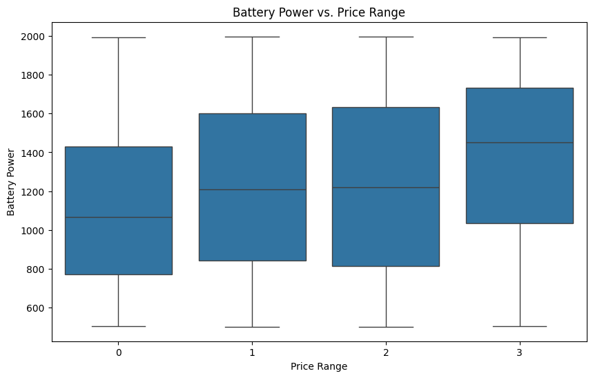
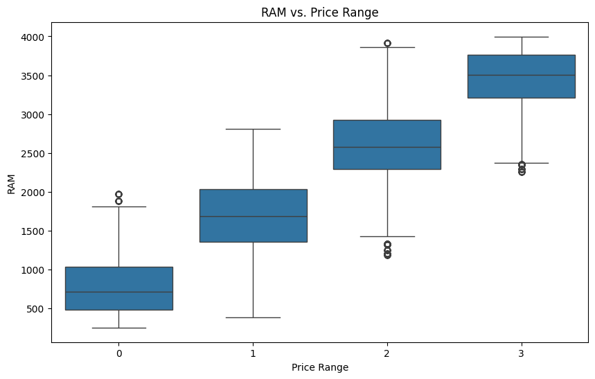
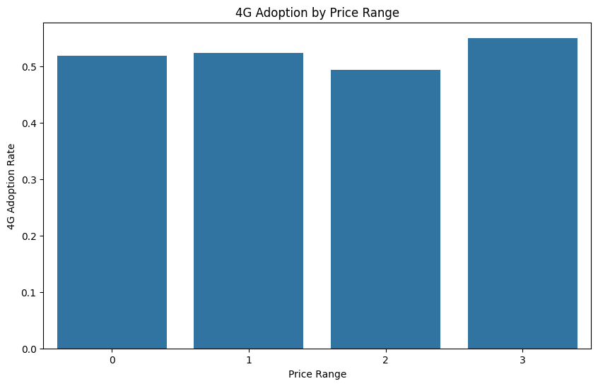
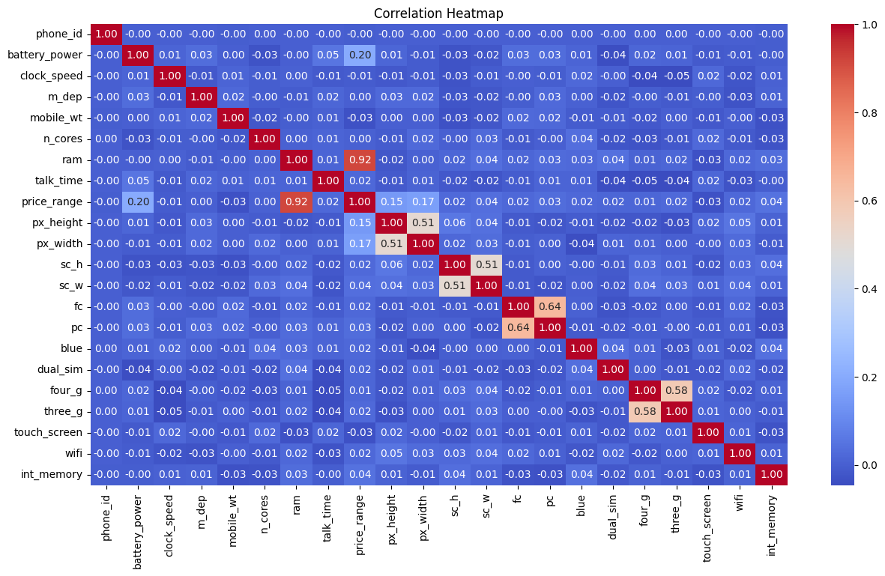

Creating a normalized database (3NF)#
{
"kernelspec": {
"display_name": "Python 3",
"language": "python",
"name": "python3"
},
"language_info": {
"codemirror_mode": {
"name": "ipython",
"version": 3
},
"file_extension": ".py",
"mimetype": "text/x-python",
"name": "python",
"nbconvert_exporter": "python",
"pygments_lexer": "ipython3",
"version": "3.8.0"
}
}
{'kernelspec': {'display_name': 'Python 3',
'language': 'python',
'name': 'python3'},
'language_info': {'codemirror_mode': {'name': 'ipython', 'version': 3},
'file_extension': '.py',
'mimetype': 'text/x-python',
'name': 'python',
'nbconvert_exporter': 'python',
'pygments_lexer': 'ipython3',
'version': '3.8.0'}}
import pandas as pd
import numpy as np
df_csv = pd.read_csv('mobile_prices.csv')
from sklearn.model_selection import train_test_split
from sklearn.preprocessing import StandardScaler
import ydata_profiling
profile = ydata_profiling.ProfileReport(df_csv, title="Pandas Profiling Report")
# profile
import pandas as pd
import sqlite3
from pathlib import Path
from tqdm import tqdm # For progress bar
csv_path = 'mobile_prices.csv'
def create_database(csv_path, db_path='mobile_phones.db'):
# Load CSV data
print(f"Loading data from {csv_path}...")
df_csv = pd.read_csv(csv_path)
print(f"Loaded {len(df_csv)} records from CSV")
# Create SQLite database
conn = sqlite3.connect(db_path)
cursor = conn.cursor()
# Create tables
cursor.execute('''
CREATE TABLE IF NOT EXISTS phones (
phone_id INTEGER PRIMARY KEY AUTOINCREMENT,
battery_power INTEGER NOT NULL,
clock_speed DECIMAL(3,1) NOT NULL,
m_dep DECIMAL(3,1) NOT NULL,
mobile_wt INTEGER NOT NULL,
n_cores INTEGER NOT NULL,
ram INTEGER NOT NULL,
talk_time INTEGER NOT NULL,
price_range INTEGER NOT NULL,
CONSTRAINT chk_price_range CHECK (price_range BETWEEN 0 AND 3)
)
''')
cursor.execute('''
CREATE TABLE IF NOT EXISTS screen_specs (
screen_id INTEGER PRIMARY KEY AUTOINCREMENT,
phone_id INTEGER NOT NULL,
px_height INTEGER NOT NULL,
px_width INTEGER NOT NULL,
sc_h DECIMAL(4,1) NOT NULL,
sc_w DECIMAL(4,1) NOT NULL,
FOREIGN KEY (phone_id) REFERENCES phones(phone_id)
)
''')
cursor.execute('''
CREATE TABLE IF NOT EXISTS camera_specs (
camera_id INTEGER PRIMARY KEY AUTOINCREMENT,
phone_id INTEGER NOT NULL,
fc INTEGER NOT NULL,
pc INTEGER NOT NULL,
FOREIGN KEY (phone_id) REFERENCES phones(phone_id)
)
''')
cursor.execute('''
CREATE TABLE IF NOT EXISTS phone_features (
feature_id INTEGER PRIMARY KEY AUTOINCREMENT,
phone_id INTEGER NOT NULL,
blue BOOLEAN NOT NULL,
dual_sim BOOLEAN NOT NULL,
four_g BOOLEAN NOT NULL,
three_g BOOLEAN NOT NULL,
touch_screen BOOLEAN NOT NULL,
wifi BOOLEAN NOT NULL,
FOREIGN KEY (phone_id) REFERENCES phones(phone_id)
)
''')
cursor.execute('''
CREATE TABLE IF NOT EXISTS storage_specs (
storage_id INTEGER PRIMARY KEY AUTOINCREMENT,
phone_id INTEGER NOT NULL,
int_memory INTEGER NOT NULL,
FOREIGN KEY (phone_id) REFERENCES phones(phone_id)
)
''')
# Insert data into tables with progress bar
print("\nInserting data into database...")
for index in tqdm(range(len(df_csv)), desc="Processing records"):
row = df_csv.iloc[index]
# Insert into phones table
cursor.execute('''
INSERT INTO phones (
battery_power, clock_speed, m_dep, mobile_wt, n_cores,
ram, talk_time, price_range
) VALUES (?, ?, ?, ?, ?, ?, ?, ?)
''', (
row['battery_power'], row['clock_speed'], row['m_dep'],
row['mobile_wt'], row['n_cores'], row['ram'],
row['talk_time'], row['price_range']
))
# Get the last inserted phone_id
phone_id = cursor.lastrowid
# Insert into screen_specs
cursor.execute('''
INSERT INTO screen_specs (
phone_id, px_height, px_width, sc_h, sc_w
) VALUES (?, ?, ?, ?, ?)
''', (phone_id, row['px_height'], row['px_width'], row['sc_h'], row['sc_w']))
# Insert into camera_specs
cursor.execute('''
INSERT INTO camera_specs (
phone_id, fc, pc
) VALUES (?, ?, ?)
''', (phone_id, row['fc'], row['pc']))
# Insert into phone_features
cursor.execute('''
INSERT INTO phone_features (
phone_id, blue, dual_sim, four_g, three_g, touch_screen, wifi
) VALUES (?, ?, ?, ?, ?, ?, ?)
''', (
phone_id, row['blue'], row['dual_sim'], row['four_g'],
row['three_g'], row['touch_screen'], row['wifi']
))
# Insert into storage_specs
cursor.execute('''
INSERT INTO storage_specs (
phone_id, int_memory
) VALUES (?, ?)
''', (phone_id, row['int_memory']))
# Commit changes and close connection
conn.commit()
conn.close()
print(f"\nDatabase created successfully at {db_path}")
def verify_database(db_path='mobile_phones.db'):
"""Verify the database by counting rows in each table"""
conn = sqlite3.connect(db_path)
cursor = conn.cursor()
# Create DataFrame from SQLite tables
df_db = {}
tables = ['phones', 'screen_specs', 'camera_specs', 'phone_features', 'storage_specs']
print("\nDatabase verification:")
for table in tables:
# Get row count
cursor.execute(f"SELECT COUNT(*) FROM {table}")
count = cursor.fetchone()[0]
print(f"{table}: {count} rows")
# Store table data in DataFrame
df_db[table] = pd.read_sql_query(f"SELECT * FROM {table}", conn)
conn.close()
return df_db
if __name__ == "__main__":
if not csv_path:
csv_path = input("Enter the path to your CSV file: ")
if csv_path and Path(csv_path).exists():
create_database(csv_path)
df_db = verify_database()
print("\nDatabase DataFrames stored in df_db dictionary.")
print("Access tables using df_db['table_name'], e.g., df_db['phones']")
elif not csv_path and 'df_csv' in globals():
create_database(df_csv)
df_db = verify_database()
print("\nDatabase DataFrames stored in df_db dictionary.")
print("Access tables using df_db['table_name'], e.g., df_db['phones']")
else:
print(f"Error: File {csv_path} not found!")
Loading data from mobile_prices.csv...
Loaded 2000 records from CSV
Inserting data into database...
Processing records: 0%| | 0/2000 [00:00<?, ?it/s]
Processing records: 94%|█████████████████████████████████████████████████████████████████████████████████████████████████████████████████▊ | 1882/2000 [00:00<00:00, 18728.66it/s]
Processing records: 100%|█████████████████████████████████████████████████████████████████████████████████████████████████████████████████████████| 2000/2000 [00:00<00:00, 18623.22it/s]
Database created successfully at mobile_phones.db
Database verification:
phones: 58007 rows
screen_specs: 58007 rows
camera_specs: 58007 rows
phone_features: 58007 rows
storage_specs: 58007 rows
Database DataFrames stored in df_db dictionary.
Access tables using df_db['table_name'], e.g., df_db['phones']
import pandas as pd
import sqlite3
# Connect to the database
conn = sqlite3.connect('mobile_phones.db')
# 1. Basic join of all tables
query_all = """
SELECT
p.phone_id,
p.battery_power,
p.clock_speed,
p.m_dep,
p.mobile_wt,
p.n_cores,
p.ram,
p.talk_time,
p.price_range,
s.px_height,
s.px_width,
s.sc_h,
s.sc_w,
c.fc,
c.pc,
f.blue,
f.dual_sim,
f.four_g,
f.three_g,
f.touch_screen,
f.wifi,
st.int_memory
FROM phones p
JOIN screen_specs s ON p.phone_id = s.phone_id
JOIN camera_specs c ON p.phone_id = c.phone_id
JOIN phone_features f ON p.phone_id = f.phone_id
JOIN storage_specs st ON p.phone_id = st.phone_id
"""
# Load complete dataset
df_complete = pd.read_sql_query(query_all, conn)
print("\nComplete dataset shape:", df_complete.shape)
print("\nFirst few rows of complete dataset:")
print(df_complete.head())
# 2. Join for high-end phones (price_range = 3) with their features
query_high_end = """
SELECT
p.phone_id,
p.battery_power,
p.ram,
f.four_g,
f.touch_screen,
s.px_height,
s.px_width,
c.fc as front_camera,
c.pc as primary_camera
FROM phones p
JOIN phone_features f ON p.phone_id = f.phone_id
JOIN screen_specs s ON p.phone_id = s.phone_id
JOIN camera_specs c ON p.phone_id = c.phone_id
WHERE p.price_range = 3
"""
df_high_end = pd.read_sql_query(query_high_end, conn)
print("\nHigh-end phones shape:", df_high_end.shape)
print("\nFirst few high-end phones:")
print(df_high_end.head())
# 3. Join for finding phones with specific features
query_feature_focus = """
SELECT
p.phone_id,
p.battery_power,
p.price_range,
f.four_g,
f.wifi,
f.touch_screen,
st.int_memory
FROM phones p
JOIN phone_features f ON p.phone_id = f.phone_id
JOIN storage_specs st ON p.phone_id = st.phone_id
WHERE f.four_g = 1
AND f.wifi = 1
AND f.touch_screen = 1
ORDER BY p.price_range DESC
"""
df_feature_focus = pd.read_sql_query(query_feature_focus, conn)
print("\nFeature-focused phones shape:", df_feature_focus.shape)
print("\nFirst few feature-focused phones:")
print(df_feature_focus.head())
# 4. Join for screen and camera analysis
query_screen_camera = """
SELECT
p.phone_id,
p.price_range,
s.px_height * s.px_width as total_pixels,
s.sc_h * s.sc_w as screen_area,
c.fc + c.pc as total_camera_mp
FROM phones p
JOIN screen_specs s ON p.phone_id = s.phone_id
JOIN camera_specs c ON p.phone_id = c.phone_id
ORDER BY total_camera_mp DESC
"""
df_screen_camera = pd.read_sql_query(query_screen_camera, conn)
print("\nScreen and camera analysis shape:", df_screen_camera.shape)
print("\nFirst few rows of screen and camera analysis:")
print(df_screen_camera.head())
# Close the connection
conn.close()
# Example analyses using the DataFrames
print("\nSummary Statistics:")
print("\nAverage specs by price range:")
print(df_complete.groupby('price_range')[['battery_power', 'ram', 'int_memory']].mean())
print("\n4G adoption by price range:")
print(df_complete.groupby('price_range')['four_g'].mean())
print("\nCorrelation between price range and total camera megapixels:")
print(df_screen_camera[['price_range', 'total_camera_mp']].corr())
Complete dataset shape: (58007, 22)
First few rows of complete dataset:
phone_id battery_power clock_speed m_dep mobile_wt n_cores ram \
0 1 842 2.2 0.6 188 2 2549
1 2 1021 0.5 0.7 136 3 2631
2 3 563 0.5 0.9 145 5 2603
3 4 615 2.5 0.8 131 6 2769
4 5 1821 1.2 0.6 141 2 1411
talk_time price_range px_height ... sc_w fc pc blue dual_sim \
0 19 1 20 ... 7 1 2 0 0
1 7 2 905 ... 3 0 6 1 1
2 9 2 1263 ... 2 2 6 1 1
3 11 2 1216 ... 8 0 9 1 0
4 15 1 1208 ... 2 13 14 1 0
four_g three_g touch_screen wifi int_memory
0 0 0 0 1 7
1 1 1 1 0 53
2 1 1 1 0 41
3 0 1 0 0 10
4 1 1 1 0 44
[5 rows x 22 columns]
High-end phones shape: (14501, 9)
First few high-end phones:
phone_id battery_power ram four_g touch_screen px_height px_width \
0 7 1821 3220 1 0 381 1018
1 14 1821 3220 1 0 381 1018
2 18 769 3946 0 0 248 874
3 19 1520 3826 1 1 151 1005
4 24 838 3554 1 0 984 1850
front_camera primary_camera
0 4 10
1 4 10
2 0 1
3 5 18
4 1 4
Feature-focused phones shape: (7743, 7)
First few feature-focused phones:
phone_id battery_power price_range four_g wifi touch_screen \
0 19 1520 3 1 1 1
1 78 1448 3 1 1 1
2 88 1589 3 1 1 1
3 123 1900 3 1 1 1
4 131 1379 3 1 1 1
int_memory
0 33
1 45
2 58
3 18
4 36
Screen and camera analysis shape: (58007, 5)
First few rows of screen and camera analysis:
phone_id price_range total_pixels screen_area total_camera_mp
0 1713 0 300510 32 39
1 3713 0 300510 32 39
2 5713 0 300510 32 39
3 7713 0 300510 32 39
4 9713 0 300510 32 39
Summary Statistics:
Average specs by price range:
battery_power ram int_memory
price_range
0 1116.902000 785.314000 31.174000
1 1228.925602 1679.489209 32.114390
2 1228.217541 2582.833552 30.920775
3 1380.014413 3449.216192 33.974347
4G adoption by price range:
price_range
0 0.518000
1 0.523961
2 0.494036
3 0.550031
Name: four_g, dtype: float64
Correlation between price range and total camera megapixels:
price_range total_camera_mp
price_range 1.000000 0.031605
total_camera_mp 0.031605 1.000000
Conclusion#
This notebook demonstrated the transformation of raw CSV data into a normalized SQLite database, providing an efficient framework for future analyses and decision-making.
import seaborn as sns
import matplotlib.pyplot as plt
# 1. Distribution of Price Range
plt.figure(figsize=(10, 6))
sns.countplot(x='price_range', data=df_complete)
plt.title('Distribution of Price Range')
plt.xlabel('Price Range')
plt.ylabel('Count')
plt.show()
# 2. Battery Power vs. Price Range
plt.figure(figsize=(10, 6))
sns.boxplot(x='price_range', y='battery_power', data=df_complete)
plt.title('Battery Power vs. Price Range')
plt.xlabel('Price Range')
plt.ylabel('Battery Power')
plt.show()
# 3. RAM vs. Price Range
plt.figure(figsize=(10, 6))
sns.boxplot(x='price_range', y='ram', data=df_complete)
plt.title('RAM vs. Price Range')
plt.xlabel('Price Range')
plt.ylabel('RAM')
plt.show()
# 4. 4G Adoption by Price Range
plt.figure(figsize=(10, 6))
four_g_adoption = df_complete.groupby('price_range')['four_g'].mean().reset_index()
sns.barplot(x='price_range', y='four_g', data=four_g_adoption)
plt.title('4G Adoption by Price Range')
plt.xlabel('Price Range')
plt.ylabel('4G Adoption Rate')
plt.show()
# 5. Correlation Heatmap
plt.figure(figsize=(15, 8))
correlation_matrix = df_complete.corr()
sns.heatmap(correlation_matrix, annot=True, cmap='coolwarm', fmt='.2f')
plt.title('Correlation Heatmap')
plt.show()




